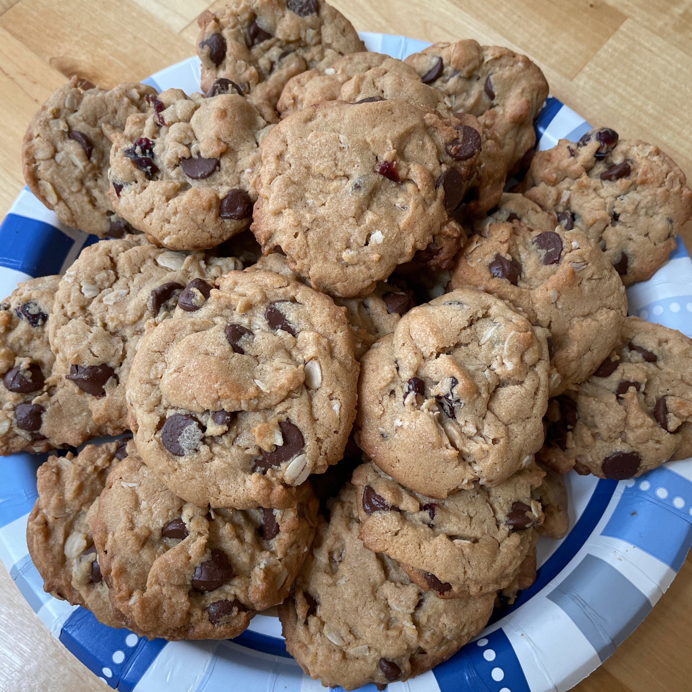

Chocolate Chip Cookies

Description
A great combination of chocolate chips, oatmeal, and peanut butter.
Ingredients
- ½ cup butter
- ½ cup white sugar
- ⅓ cup packed brown sugar
- ½ cup peanut butter
- ½ teaspoon vanilla extract
- 1 egg
- 1 cup all-purpose flour
- 1 teaspoon baking soda
- ¼ teaspoon salt
- ½ cup rolled oats
- 1 cup semisweet chocolate chips
Steps
- Preheat oven to 350 degrees F (175 degrees C).
- In a medium bowl, cream together the butter, white sugar and brown sugar until smooth. Stir in the peanut butter, vanilla and egg until well blended. Combine the flour, baking soda and salt; stir into the batter just until moistened. Mix in the oats and chocolate chips until evenly distributed. Drop by tablespoonfuls on to lightly greased cookie sheets.
- Bake for 10 to 12 minutes in the preheated oven, until the edges start to brown. Cool on cookie sheets for about 5 minutes before transferring to wire racks to cool completely.
Home